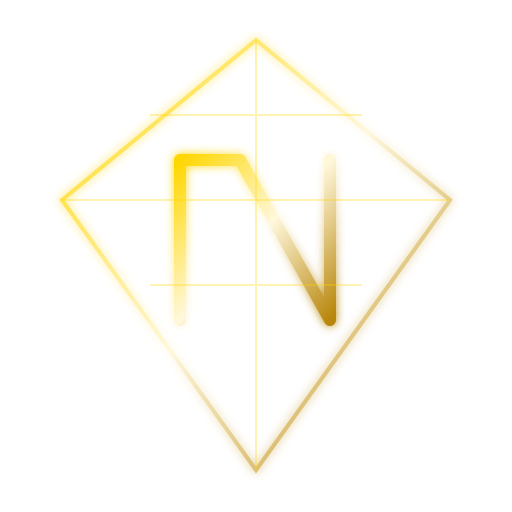

NAJEEB NETWORKدستور السيادة الرقمية والقيمة المطلقة
تأسست شبكة نجيب (Najeeb Network) لتكون الجسر النهائي بين ندرة البيتكوين وقوة البرمجيات الحديثة. نحن نؤمن بأن القيمة يجب أن تكون سيادية، ومستقلة، ومربوطة بأقوى أصل رقمي عرفته البشرية.
العملة الرسمية: NAJ
الارتباط: 1 NAJ = 1 BTC برمجياً.
إجمالي العرض: 111,000,000 عملة فقط.
المكافأة: 50 NAJ لكل كتلة (كل ثانية واحدة).
نستخدم بروتوكول Sovereign Proof-of-Stake (SPoS) الذي يجمع بين كفاءة الطاقة والسرعة الفائقة، مع نظام تشفير "المالك الماستر" الذي يسمح باستعادة الأصول عبر المنطق الرياضي.